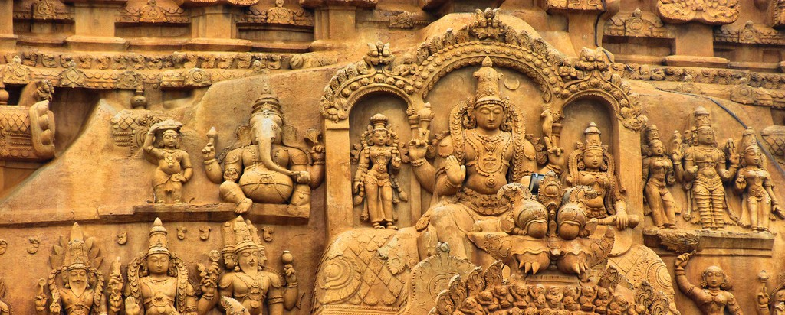

Thanjavur, ‘Rice Bowl of Tamil Nadu’ is the capital of art and literature of Tamil Nadu state in India. During the Chola rule, Tanjore was the bustling capital of the empire. This city proves to be a perfect destination for an art and architecture lover considering its major attraction of the Thanjavur Big Temple. The smiling people of the city add to the beauty of the city along with dancing dolls called Thanjavur dolls or Bommai and Thanjavur paintings. It is said to have been named as Tanjor after a demon named “Tanoj”, who wished the town to be named after him. Reaching to this city is quite easy from Chennai and Bangalore through direct trains and buses. There are many amazing places to visit in Thanjavur Even if it is your One day tour to Thanjavur. |